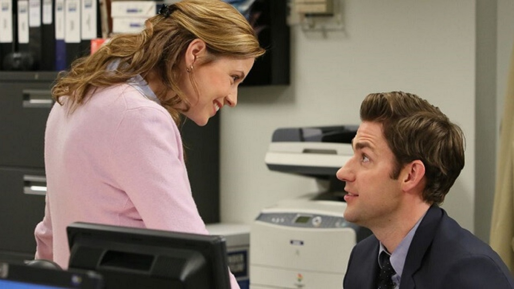

Sobre a desenvolvedora
Olá Sejam bem vindes! Me chamo Vitória, tenho 22 anos e estou cursando Análise e Desenvolvimento
de Sistemas na faculdade São Paulo Tech School.
Espero trazer através desse projeto uma visão mais profunda sobre o que a série The Office pode
significar além do humor criativo e critíco por trás da série.
Desde criança sempre adorei passar o meu tempo livre assistindo sitcons. Me lembro de
passar as
tardes assistindo séries como "Eu a patroa e as crianças", "Um maluco no pedaço", "Hanna
Montana", "Boa
Sorte, Charlie", "Os Feiticeiros de Waverly Place", entre outras.
Com o passar dos anos essas séries foram dando espaço para as outras que estão no sistema de
stream,
como por exemplo "The Good Place", "Brooklyn Nine-Nine", que me lembro de ter gostado tanto
e sabia que
ela tinha sido inspirada em uma série muito famosa, claro, THE OFFICE, mas como existe uma
espécie de
rivalidade entre os fãs das duas séries eu estava decidida a nem dar uma chance para The
Office já que
tinha amado Brooklyn.

Alguns meses se passaram e vi que a série estava em alta na Netflix, foi ai que eu decidi que daria
uma
chance e comecei a assistir The Office pela primeira vez na Netflix. Meu irmão queria ver junto
comigo,
o que tornou a experiência de ver a série muito melhor.
Como muitos fãs sabem o inicio da série é um pouco desgastante e desinteressante, mas como decorrer
dos
episódios fui me apegando aos personagens e a série no geral.
Meu irmão já tinha iniciado a faculdade, que inclusive é a mesma que estou agora, um ano
depois.
Geralmente nós conseguiamos ver de 3 a 4 episódios por dia, sei que terminamos a série em 3
meses e
o último episódio foi o mais marcante para mim. A série se encerra com uma frase da Pam
(particularmente minha personagem favorita): "There's a lot of beauty in ordinary things.
Isn't that
kind of the point?" que foi traduzida como "Tem muita beleza nas coisas comuns, nas coisas
simples,
essa não é a moral da história?", essa frase encapsula a essência da série, destacando a
beleza e o
valor encontrados nas pequenas e aparentemente comuns experiências da vida cotidiana.
Essa série me fez reencontrar significado para muitas coisas, como carreira e
relacionamentos.
Tinha uma visão pessimista sobre ambas, mas assistir a essa série me fez desejar ter uma
carreira
que eu me orgulhe e querer ter um relacionamento saudável, como o do Jim e da Pam.

Meu interesse foi tão grande que tive a vontade de estudar inglês, eu já sabia o básico mas
não a
ponto de entender os diálogos, na primeira vez que assisti tive o interesse em procurar como
eram
alguns diálogos em inglês, uma vez que estava vendo dublado e sentia que algumas piadas se
perderam
na tradução, por isso reassisti a série pela segunda vez legendada, o que fez o meu nível de
inglês
ir aumentando a cada vez que reassisti a série, hoje somam 10 vezes. Não me garanto 100% na
pronúncia das palavras mas entendo a grande maioria das palavras por conta da série.